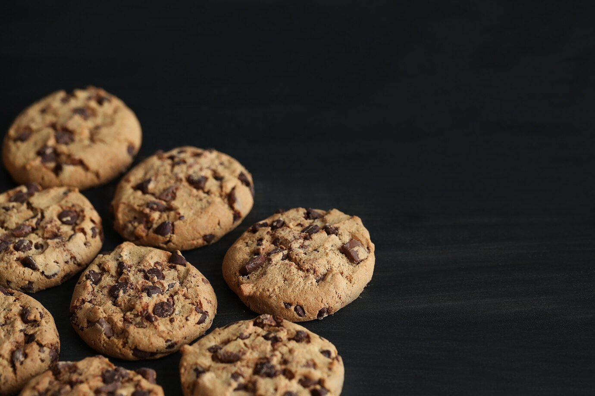

Chocolate Chip Cookies are a classic favorite that many people love.
These cookies are known for their soft, chewy texture and the delightful bursts of chocolate in every bite. The combination of butter, sugar, and chocolate chips creates a comforting and nostalgic treat.
Principals Ingredients
1 cup butter, softened
1 cup white sugar
1 cup packed brown sugar
2 eggs
2 teaspoons vanilla extract
3 cups all-purpose flour
1 teaspoon baking soda
2 teaspoons hot water
1/2 teaspoon salt
2 cups semisweet chocolate chips
Principal Way To Do Brigadeiro
Preheat your oven to 350°F (175°C).
Cream together the butter, white sugar, and brown sugar until smooth.
Beat in the eggs one at a time, then stir in the vanilla
Dissolve baking soda in hot water and add to the batter along with salt.
Stir in flour and chocolate chips.
Drop by large spoonfuls onto ungreased pans.
Bake for about 10 minutes, or until edges are nicely browned.